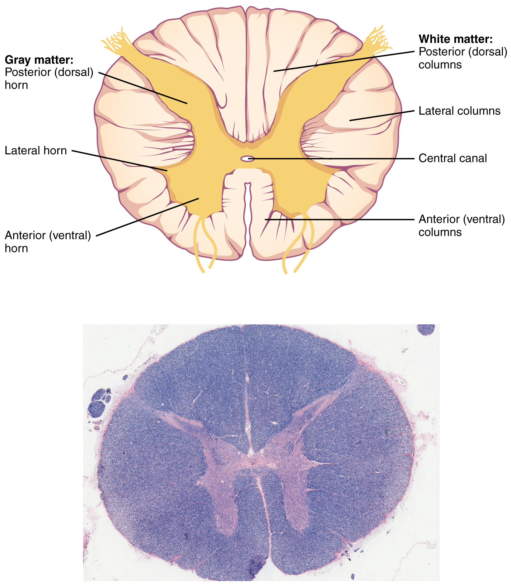

Troubles de la sensibilité
1. Définition
En 2011, l'International Association for the Study of Pain (IASP) définit la paresthésie comme une sensation anormale, spontanée ou provoquéeiasp.
2. Épidémiologie en Suisse, puis en Europe
Aucune série suisse ne suit un même trouble sensitif jusqu'au diagnostic final, donc les rangs comparent des mesures qui ne sont pas interchangeablesrmsnp.
Les polyneuropathies touchent environ 3 à 4 % des personnes de plus de 55 ans selon la mise au point de médecine internermsnp.
Un second article suisse de 2019 retient environ 8 % après 55 ans lorsque le recrutement se fait dans un cabinetrmsage.
Entre 70 et 79 ans la prévalence atteint 28 %, et après 80 ans elle peut atteindre 35 % dans le même articlermsage.
Les polyneuropathies sensitives concernent environ 30 % des personnes âgées, avec le risque de chute que cet article met au premier planrmsage.
L'incidence estimée aux Pays-Bas est de 77 pour 100 000 personnes, ce qui donne un ordre de grandeur européen hors de la Suissermsnp.
Le diabète explique 30 à 40 % des polyneuropathies et la même mise au point le tient pour la cause de loin la plus communermsnp.
La neuropathie touche 30 à 50 % des diabétiques de type 2, et jusqu'à 50 à 60 % des diabétiques de type 1rmsnp.
Dans 25 % des cas la neuropathie diabétique est douloureuse, et après 10 ans de type 2 cette douleur atteint une prévalence de 20 %rmsnprmsage.
En 2022, 6,2 % des personnes de 15 ans et plus en Suisse déclaraient un diabète ou un traitement antidiabétiqueobsandiab.
L'intervalle de confiance à 95 % de ce taux va de 5,8 à 6,6 %, sur un échantillon de 21 906 répondantsobsandiab.
Le taux déclaré était de 5,6 % chez les femmes et de 6,9 % chez les hommes lors de la même enquêteobsandiab.
En 2017 la proportion globale était de 4,8 %, puis elle est passée de 4,5 à 5,6 % chez les femmesobsandiab.
Chez les hommes le taux est passé de 5,1 à 6,9 %, et chez les 75 ans et plus, tous sexes, 15,4 % déclaraient un diabèteobsandiab.
Le syndrome du canal carpien est la neuropathie tronculaire focale la plus fréquente, avec une prévalence située entre 3 et 5 %ulg.
Dans le sud de la Suède, 14,4 % des adultes de 25 à 74 ans décrivaient des symptômes dans le territoire du nerf médianatroshi.
L'intervalle de cette prévalence symptomatique allait de 13,0 à 15,8 % dans l'enquête menée en 1997atroshi.
Le canal carpien cliniquement certain avait une prévalence de 3,8 %, avec un intervalle de 3,1 à 4,6 %atroshi.
L'enquête a obtenu 2 466 réponses parmi 2 960 adultes joignables, soit 83 %, sur 3 000 tirés au sortatroshi.
Cette enquête de 1997 porte sur une région du sud de la Suède de 170 000 habitantsatroshi.
La publication date de 1999, et la neuropathie médiane électrophysiologique symptomatique atteignait alors 4,9 %atroshi.
L'intervalle de la neuropathie électrique symptomatique allait de 4,1 à 5,8 %, au-dessus du 2,7 % confirmé par les deux méthodesatroshi.
La forme à la fois clinique et électrophysiologique atteignait 2,7 %, avec un intervalle de 2,1 à 3,4 %atroshi.
Parmi 125 témoins, 18,4 % avaient une neuropathie médiane électrique, avec un intervalle de 12,0 à 26,3 %atroshi.
La radiculopathie cervicale vraie a une prévalence de 3,3 cas pour 1 000, distincte des simples cervicalgiesrmshdc.
La revue écrit une incidence globale des cervicalgies de 15 % par an, et, à part, 23,1 cas pour 1 000 personnes-annéermshdc.
Seul 0,6 % des patients décrit des symptômes invalidants, tandis que 25 % rapportent un traumatisme cervicalrmshdc.
Dans la septième décennie, 85 % des personnes portent des modifications cervicales radiologiques, le plus souvent sans symptômermshdc.
La Société suisse de la sclérose en plaques (SEP) retient 18 000 personnes atteintes en Suisse en 2021mssuisse.
La fourchette de cette estimation va de 17 400 à 18 700, et le rapport est de 2,7 femmes pour 1 hommemssuisse.
En 2016 l'estimation était de 15 000 personnes, et le nombre a ensuite augmenté d'environ 20 %mssuisse.
Environ un cinquième de cette hausse tient à la croissance de la population, le reste n'étant pas un simple effet démographiquemssuisse.
En 2023, l'Office fédéral de la statistique (OFS) a compté 22 517 attaques cérébrales, dont 12 132 chez les hommesofsavc.
La même année compte 10 385 attaques chez les femmes et 2 580 décès attribués à l'attaque cérébraleofsavc.
Sur 2019-2023, l'incidence standardisée des attaques est de 249,4 pour 100 000, entre 247,9 et 251,0obsanavc.
Le taux brut est de 249,5 et la moyenne annuelle est de 21 729 cas sur cette période de cinq ansobsanavc.
La létalité moyenne est de 12,2 %, entre 12,0 et 12,4, et le nombre moyen de décès est de 2 651 par anobsanavc.
Ces sources ne séparent pas la fraction des attaques qui ne s'expriment que par un trouble sensitif isoléofsavc.
En Espagne, l'incidence hospitalière du syndrome de Guillain-Barré était de 1,78 pour 100 000 en 2018gbses.
Elle était de 1,71 en 2019, puis de 1,41 en 2020 et de 1,66 en 2021, pour 100 000 habitantsgbses.
La moyenne espagnole de 2018 à 2021 est de 1,67 pour 100 000, et 11 % des patients ont été ventilésgbses.
Les hommes représentaient 63,9 % des cas et l'âge moyen était de 53,2 ans dans cette série nationalegbses.
L'incidence masculine était de 2,18 pour 100 000 et l'incidence féminine de 1,18 pour 100 000gbses.
Le pic, de 3,26 pour 100 000, siégeait entre 70 et 79 ans dans la même étude espagnolegbses.
Au Royaume-Uni, l'incidence hospitalière était de 1,65 à 1,88 pour 100 000 et par an entre 2016 et 2019gbsuk.
Environ 30 % des neuropathies chroniques restent sans cause dans la mise au point de médecine internermsnp.
Dans près d'un tiers des formes chroniques du sujet âgé, aucune cause n'est retenue après le bilanrmsage.
Chez des patients diabétiques, une autre étiologie est présente dans 53 % des neuropathies examinéesrmsnp.
L'intolérance au glucose s'associe à une polyneuropathie dans 11 à 25 % des cas, contre 7,1 % dans la population de référencermsage.
Jusqu'à 90 % des patients en insuffisance rénale terminale développent une neuropathie urémiquermsnp.
Une cohorte de 2 290 personnes de 70 à 79 ans trouvait 42 % de polyneuropathies, indépendamment d'une seule causermsage.
Dans cette cohorte, la neuropathie pouvait atteindre 70 % en insuffisance rénale terminalermsage.
Les chiffres de 90 % et de 70 % viennent de deux articles suisses et ne sont pas fondus en une moyennermsnprmsage.
Une immunoglobuline monoclonale est présente chez 3 à 4 % des personnes de plus de 50 ansrmsnp.
Ce pourcentage décrit la monoclonalité, et non la part des personnes qui ont une neuropathiermsnp.
Si une gammapathie de signification indéterminée est connue, la neuropathie concerne 8 à 36 % de ces personnesrmsage.
Une gammapathie est retrouvée dans jusqu'à 10 % des polyneuropathies chroniques qui restaient sans causermsage.
Les vasculites rares se manifestent dans 77 % des cas par une polyneuropathie ou une mononeuropathie multiplermsage.
Une polyneuropathie distale s'observe jusque dans 30 % des infections chroniques par le virus de l'immunodéficience humainermsnp.
60 % des patients sous chimiothérapie présentent une neuropathie, et elle devient chronique dans 30 % des casrmsnp.
Le seuil d'alcool à risque est supérieur à 30 grammes par jour selon la mise au point suisse de 2019rmsnp.
L'Organisation mondiale de la santé, reprise par cet article, retient 3 verres chez l'homme et 2 verres chez la femmermsnp.
3. Physiopathologie
Le tact fin, la pallesthésie et le sens de position forment le sens épicritique, véhiculé par les fibres de gros calibrermsnp.
Les messages du sens épicritique, portés par les fibres de gros calibre, montent dans les cordons postérieursrmsnp.
La douleur et la température forment le sens protopathique, véhiculé par les fibres de petit calibrermsnp.
La douleur et la température gagnent les voies spinothalamiques par les fibres de petit calibrermsnp.
La grosse fibre reste du même côté dans les cordons postérieurs et elle ne croise qu'au bulbedcml.
La petite fibre synapse dans la corne postérieure, puis elle croise dans la moelle vers le côté opposéstt.
Le thalamus, puis le cortex somatosensoriel du gyrus postcentral, reçoit chaque voie après son croisementdcmlstt.
Une polyneuropathie distale touche d'abord les axones les plus longs, d'où le territoire en chaussettes qui remontermsage.
L'hyperglycémie chronique provoque la lésion de ces axones longs, et le diabète en est la cause la plus communermsnp.
Le contrôle glycémique réduit nettement le risque dans le diabète de type 1, où l'exposition est souvent longuermsnp.
Dans le type 2, l'évidence de cette protection est moindre, parce que l'atteinte est souvent déjà là au diagnosticrmsnp.
L'alcool lèse le nerf directement ou par carence en thiamine, souvent avec un déficit cérébelleux associérmsnp.
La toxicité directe donne une atteinte sensitive sévère, et la douleur y est souvent au premier planrmsnp.
La carence en cobalamine lèse les grosses fibres et elle peut atteindre la moelle, avec une ataxie de marchermsnp.
Les signes neurologiques de ce manque apparaissent parfois sans anémie macrocytaire, ce qui trompe l'hémogrammermsnp.
Une hernie cervicale provoque une déformation mécanique de la racine et une irritation chimique du même nerfrmshdc.
Des cytokines et le facteur de croissance nerveuse participent à la douleur radiculaire, au-delà de la seule compressionrmshdc.
La racine cervicale 7 (C7) est la plus souvent touchée, suivie de la racine cervicale 6 (C6)rmshdc.
Plus de 90 % des maladies discales cervicales symptomatiques intéressent les espaces (C5)-(C6) et (C6)-(C7)rmshdc.
Dans le canal carpien, la pression monte, l'œdème veineux s'installe, puis le nerf médian s'ischémieulg.
La conduction du médian ralentit sous le ligament, et ce ralentissement focal explique les acroparesthésiesulg.
Une atteinte aiguë, asymétrique, surtout motrice ou non longueur-dépendante sort de ce schéma axonal lentrmsnp.
Ce tableau atypique impose un avis neurologique, parce que le bilan de première ligne ne suffit plusrmsnp.
La coupe de moelle en couleur montre les cornes et les colonnes sur une seule imageopenstax.
Elle sert à distinguer un niveau médullaire, qui suit un cordon, d'un territoire distal de nerf périphériqueopenstaxrmsnp.
La coupe thoracique ne sépare pas l'ischémie cérébrale du Guillain-Barré, donc les cas libres s'ouvrent sans nouveau dessineuroradavceuroradgbs.
Coupe de moelle thoracique
Le schéma vient d'OpenStax, Anatomy and Physiology, publié le 18 mai 2016 sous licence CC BY 4.0openstax.
La lame histologique, au grossissement 40, est créditée aux Régents de l'Université du Michigan en 2012openstax.
La matière grise est dessinée en jaune et forme les cornes, dont la corne postérieure reçoit les fibres sensitivesopenstax.
La corne antérieure porte les motoneurones, et elle n'est pas le premier relais de la sensibilité cutanéeopenstax.
Les colonnes postérieures conduisent le tact fin et la pallesthésie du même côté jusqu'au bulbedcml.
Les voies spinothalamiques montent dans la région antérolatérale après avoir croisé dans la moellestt.
Le canal central est le petit anneau au milieu, et il sert de repère sans conduire la sensibilité cutanéeopenstax.
Cette image ne montre pas le cerveau, donc l'ischémie cérébrale se cherche au-dessus de cette coupe thoraciqueopenstax.
Le fichier OpenStax est déjà légendé en anglais, et cette leçon n'ajoute aucun repère sur l'imageopenstax.

Cas libres, sans copie du cliché
Le cas Eurorad 18806 montre un infarctus aigu du territoire sylvien droit en diffusion, et l'on n'en copie pas le clichéeuroradavc.
Le cas Eurorad 18552 montre un rehaussement des racines de la queue de cheval après contraste, sans copie du clichéeuroradgbs.
La coupe OpenStax reste celle des cordons thoraciques, et elle ne remplace pas ces cas d'imagerieopenstax.
| Perturbation | Exploration | Thérapeutique |
|---|---|---|
| L'axone distal long dégénère lorsque l'hyperglycémie chronique se prolonge chez le diabétiquermsnp. | Le diapason gradué et le monofilament montrent cette perte distale aux orteils et aux malléolesrmsage. | Le contrôle glycémique réduit le risque de neuropathie, surtout lorsque le diabète est de type 1rmsnp. |
| La pression dans le canal carpien ischémie le nerf médian sous le ligament annulaireulg. | La compression du poignet pendant 30 secondes reproduit la plainte dans le territoire médianulg. | Le cours de Liège retient l'attelle nocturne pendant 3 mois, puis une ou deux infiltrationsulg. |
| Les cordons postérieurs manquent de cobalamine et la pallesthésie s'effondre avant l'anémiermsnp. | Le sens de position et la marche ataxique montrent cette colonne mieux que le tact grossierrmsage. | La supplémentation vise une récupération neurologique, et la voie dépend de la sévéritérmsnp. |
| La hernie cervicale déforme la racine et l'enflamme par des médiateurs locauxrmshdc. | La concordance entre la racine clinique et l'image du disque tranche, non l'image seulermshdc. | On opère si un déficit moteur apparaît brusquement ou progresse, ou si la douleur résiste 6 à 8 moisrmshdc. |
4. Démarche diagnostique
On écarte d'abord les maladies qui tuent ou qui paralysent vite, avant de classer les causes fréquentesofsavc.
Le rang de fréquence d'une maladie grave reste sans effet sur sa place dans l'ordre d'exclusiongbses.
L'infarctus cérébral ou l'accident ischémique transitoire (AIT) sensitif est le rang E1obsanavc.
On active la filière d'attaque dès ce motif latéralisé et soudain, avant le bilan de neuropathieofsavc.
Le syndrome de Guillain-Barré est le rang E2, parce que l'insuffisance respiratoire peut emporter le patient dans les heures ou les joursgbses.
La myélopathie cervicale compressive est le rang E3, et la revue de 2015 la décrit avec ses troubles de la mictionrmshdc.
La mononévrite multiple des vasculites est le rang E4, et la suspicion impose des investigations rapidesrmsnp.
Le sang peut rester normal lorsque la vasculite est limitée au nerf, ce qui ne doit pas rassurerrmsnp.
Le rang 1 est le canal carpien, seule prévalence de population lue pour ce motif, à 3,8 % entre 25 et 74 ansatroshi.
Le rang 2 est la polyneuropathie diabétique, soit 30 à 40 % des polyneuropathies, et non une prévalence de populationrmsnp.
Les rangs 3 à 10 n'ont pas de cohorte commune, et ils ne recopient pas l'ordre étiologique de la revue des neuropathiesrmsnp.
La radiculopathie cervicale vraie est le rang 3, parce que 3,3 pour 1 000 mesure cette radiculopathiermshdc.
La lombalgie irradiée néerlandaise, à 9,4 et 17,2 pour 1 000 personnes-année, mesure un code mixte et n'a pas de rangspijker.
Dans 103 dossiers de ce code, 53 avaient un diagnostic initial de radiculopathie, ce qui n'est pas le taux du code entierspijker.
La neuropathie alcoolique et la sclérose combinée par manque de cobalamine viennent après, sans prévalence de population luermsnp.
Chez l'adulte jeune, un trouble sensitif qui change de territoire fait chercher la sclérose en plaques, sans la classer par un stockrmsep.
Le premier épisode sensitif peut évoquer la moelle cervicale, et une seconde poussée dans un autre territoire permet le diagnostic cliniquermsep.
L'attaque est comptée en cas annuels, et sa fraction seulement sensitive n'est pas connueofsavc.
Exclusion de l'ischémie cérébrale sensitive
Un trouble sensitif qui s'installe en minutes sur un hémicorps fait chercher l'attaque cérébrale avant la polyneuropathieofsavc.
Ce volume de cas impose la filière d'attaque, et un trouble sensitif soudain ne se rassure pasofsavc.
Ce décompte de 22 517 cas et la létalité de 12,2 % portent sur toutes les attaques, pas sur la seule forme sensitiveofsavcobsanavc.
La part seulement sensitive n'est pas publiée à part, donc le rang vasculaire reste un rang d'enveloppeobsanavc.
Un épisode qui régresse fait craindre un accident ischémique transitoire, et la filière d'attaque reste la mêmeofsavc.
L'épisode bref peut annoncer un infarctus, ce qui justifie de ne pas renvoyer le patient sans avis vasculaireofsavc.
| Diagnostic | Signe clé | Examen qui tranche | Mécanisme | Conduite et rang |
|---|---|---|---|---|
| Le syndrome du canal carpien est le rang 1, seule prévalence de population lue pour ce motif sensitifatroshi. | Les doigts médians fourmillent la nuit, et le patient secoue souvent la main pour se soulagerulg. | Ce test de compression au poignet reproduit les fourmillements nocturnes du territoire médianulg. | La pression intracanalaire ischémie le nerf médian et ralentit sa conduction focaleulg. | La Haute Autorité de santé (HAS) peut proposer la chirurgie d'emblée si l'électroneuromyogramme (ENMG) montre une perte axonale, au même titre qu'un déficit moteur ou une amyotrophiehas. |
| La polyneuropathie diabétique distale symétrique est le rang 2, comme part des polyneuropathies et non comme prévalencermsnp. | Les deux pieds sont touchés en chaussettes, et la limite peut remonter vers les jambesrmsage. | Le diapason et le monofilament confirment la perte distale lors du dépistage annuelrmsage. | L'hyperglycémie chronique lèse les axones les plus longs avant les axones courtsrmsnp. | On traite la glycémie et l'on protège le pied, sans rang d'exclusion pour cette formermsnp. |
| La radiculopathie cervicale vraie est le rang 3, parce que 3,3 pour 1 000 mesure cette radiculopathie et non une cervicalgiermshdc. | La douleur cervicale suit une racine du membre supérieur, et elle augmente lorsque le patient tousseulg. | L'examen et l'image doivent concorder, parce qu'une hernie isolée sur le cliché ne tranche pasrmshdc. | La hernie est une déformation de la racine, surtout entre la cinquième et la septième cervicalesrmshdc. | On propose la chirurgie si le déficit moteur apparaît d'un coup ou progresse, ou si la douleur résiste 6 à 8 moisrmshdc. |
| La polyneuropathie alcoolique suit le diabète parmi les causes toxiques et carentiellesrmsnp. | La douleur distale domine lorsque la consommation dépasse 30 grammes d'alcool par jourrmsnp. | L'anamnèse de la consommation d'alcool oriente le diagnostic, parfois avec un signe cérébelleux associérmsnp. | La toxicité directe de l'alcool et la carence en thiamine coexistent souvent chez le même patientrmsnp. | L'arrêt et la vitamine précoce aident surtout les formes récentes, sans rang d'exclusionrmsnp. |
| La sclérose combinée de la moelle par carence en cobalamine est une maladie, non un symptômermsnp. | L'ataxie et la chute de la pallesthésie existent alors même que l'anémie macrocytaire manquermsnp. | La cobalamine basse, ou les métabolites si la valeur est limite, confirme le manquermsnp. | Les cordons postérieurs et les grosses fibres manquent de cobalamine, d'où la marche talonnantermsage. | On supplémente, par voie intramusculaire si le tableau est sévère ou si l'absorption est rompuermsnp. |
| La sclérose en plaques est dans les dix, sans rang de fréquence tiré d'un stock de personnesrmsep. | Deux poussées séparées dans le temps et dans le territoire permettent un diagnostic cliniquermsep. | L'imagerie peut confirmer la maladie dès la première poussée, appelée syndrome clinique isolérmsep. | Une plaque démyélinise le système nerveux central, et le premier épisode sensitif peut évoquer la moellermsep. | Les traitements immunomodulateurs ralentissent le handicap surtout lorsqu'ils sont pris tôt dans la maladiermsep. |
| L'infarctus cérébral ou l'accident ischémique transitoire sensitif est le rang d'exclusion E1obsanavc. | Le déficit sensitif s'installe en minutes sur un hémicorps, non en chaussettes depuis des moisofsavc. | La filière neurovasculaire et l'imagerie cérébrale tranchent, avant tout électroneuromyogramme de confortofsavc. | L'ischémie coupe la voie sensitive dans le cerveau, au-dessus de la moelle et du nerf périphériqueobsanavc. | On active la filière d'attaque sans retard, parce que 22 517 cas ont été comptés en 2023ofsavc. |
| La myélopathie cervicale compressive est le rang d'exclusion E3, avec les troubles de la miction que la revue décritrmshdc. | Un niveau sensitif, une main maladroite et un signe pyramidal se tiennent alors ensemblermshdc. | L'image du canal cervical doit concorder avec le signe clinique, non l'inversermshdc. | Le rétrécissement comprime les cordons, et la plupart des images du grand âge restent sans symptôme de moellermshdc. | La forme avancée, concordante avec le rétrécissement, indique la chirurgie sans le délai de la douleur radiculairermshdc. |
| Le syndrome de Guillain-Barré est le rang d'exclusion E2, devant la chirurgie de la moellegbses. | Les paresthésies montent en quelques jours et les réflexes ostéotendineux disparaissent aux membresgbses. | La surveillance respiratoire ne doit pas attendre le résultat du liquide céphalorachidiengbses. | L'incidence moyenne espagnole est de 1,67 pour 100 000, et 11 % des patients ont été ventilésgbses. | La politique britannique de 2025 autorise l'immunoglobuline si le Guillain-Barré, ou une variante, est diagnostiqué à l'hôpital et qu'un critère alternatif est remplinhsig. Le grade de Hughes 4 suffit seul, de même que l'évolution vers l'intubation et la ventilationnhsig. Un score modifié d'Erasmus d'insuffisance respiratoire (mEGRIS) d'au moins 3 suffit seul, comme un score de pronostic (mEGOS) d'au moins 4nhsig. Les formes légères ou non progressives qui n'exigent pas l'intubation restent exclues de cette autorisationnhsig. Le syndrome de Miller Fisher n'appelle habituellement pas l'immunoglobuline, sauf s'il chevauche un Guillain-Barré avec faiblessenhsig. |
| La mononévrite multiple des vasculites a un rang E4 provisoire, parce que sa létalité n'est pas lue dans la revuermsage. | Plusieurs nerfs tombent en jours ou en semaines, sans respecter la longueur de l'axonermsnp. | Le bilan inflammatoire et, si besoin, la biopsie nerveuse tranchent la cause vasculairermsage. | L'ischémie focale du nerf explique les étapes, et 77 % de ces vasculites touchent le nerfrmsage. | On lance les investigations sans délai, même lorsque le sang initial reste normalrmsnp. |
5. Anamnèse ciblée et drapeaux rouges
L'anamnèse vise le siège, l'horaire et la vitesse d'installation, parce que ces trois réponses changent souvent la filièrermsnp.
On demande depuis quand le trouble a commencé, afin de séparer les minutes de l'ischémie des années de l'axonermsnp.
Une installation en minutes oriente vers l'ischémie cérébrale, tandis qu'une installation en années oriente vers l'axone longrmsnpofsavc.
On demande si les deux pieds sont touchés ensemble, parce que la symétrie longueur-dépendante signe la polyneuropathie distalermsage.
On demande si la nuit réveille les doigts, ce qui oriente vers le canal carpien plutôt que vers une racineulg.
Le canal carpien provoque des acroparesthésies d'abord matinales, puis nocturnes, puis liées à certains gestes de la mainulg.
On demande si le cou, la toux ou un effort à glotte fermée augmentent la douleur du brasulg.
On demande les chutes récentes, et la vignette suisse décrit une patiente de 77 ans avec 3 chutes en 2 semainesrmsage.
On compte l'alcool en verres, avec un seuil supérieur à 30 grammes par jour dans la mise au point suissermsnp.
Le même article retient 3 verres chez l'homme et 2 verres chez la femme selon l'Organisation mondiale de la santérmsnp.
On demande la metformine et les inhibiteurs de la pompe à protons, causes connues de malabsorption de la cobalaminermsnp.
On demande une chimiothérapie par platine, taxane, vinca-alcaloïde, bortézomib ou thalidomide, molécules les plus souvent en causermsnp.
60 % des patients traités par ces molécules développent une neuropathie, qui devient chronique dans 30 % des casrmsnp.
On demande un diabète connu et des plaies de pied, parce que le déficit sensitif favorise le mal perforantrmsnp.
Dans 25 % des cas la neuropathie diabétique est douloureuse, ce qui pèse sur la marche et le chaussagermsnp.
On demande les troubles sphinctériens et une limite qui monte sur le tronc, deux réponses qui font craindre la moellermshdc.
On demande une faiblesse qui monte et un essoufflement, parce que le Guillain-Barré menace la ventilation en joursgbses.
On demande une infection récente, parce que des pathogènes comme Campylobacter précèdent le syndrome, et le confinement a pu en réduire la transmissiongbsuk.
Les signes sensitifs positifs comprennent les paresthésies, les dysesthésies et les douleurs en brûlure ou en déchargermsnp.
Les signes négatifs comprennent l'hypoesthésie et le trouble de l'équilibre, que le patient décrit parfois comme une maladressermsnp.
Les signes moteurs positifs sont les crampes et les fasciculations, et les signes négatifs sont la faiblesse et l'amyotrophiermsnp.
Le déficit moteur porte souvent sur les fléchisseurs dorsaux du pied ou des orteils dans la polyneuropathie distalermsnp.
Le patient banalise un symptôme sensitif tant qu'il reste modéré, donc l'anamnèse doit être dirigée s'il existe déjà un trouble de marchermsnp.
Chaque drapeau rouge n'est retenu que s'il dicte un geste immédiat, et non une simple vigilancermsnp.
Une liste de signes sans action ne change pas la prise en charge du jour, et elle n'a pas sa place icirmsnp.
Caractériser la plainte sensitive
Pour les pieds, on précise le siège distal, le type de brûlure ou de fourmillement, et l'horaire sur la journéermsnp.
Les sensations de la polyneuropathie longueur-dépendante montent des orteils vers les chevilles, puis vers les jambesrmsage.
Elle est souvent permanente, aggravée par la marche, et elle s'associe parfois à une plaie plantaire indolorermsnp.
Pour la main, on demande quels doigts sont pris, si la nuit réveille, et si secouer la main soulageulg.
La plainte typique du canal carpien épargne le cinquième doigt, qui dépend du nerf ulnaireulg.
Une plainte de tous les doigts, déclenchée par le froid, oriente plutôt vers un phénomène de Raynaudulg.
Pour l'hémicorps, on chronomètre le début en minutes et l'on cherche un trouble du langage ou de la faceofsavc.
Cette cinétique est typique d'une ischémie cérébrale, et elle n'est pas celle d'une chaussette chroniqueofsavc.
Pour la myélopathie cervicale, on cherche les troubles de la miction que la revue décrit dès le débutrmshdc.
Cette association est typique d'une atteinte médullaire, et elle impose l'imagerie avant le bilan de nerfrmshdc.
Pour une montée en jours, on demande la force et la toux avant le retour au domicilegbses.
Cette évolution est typique du Guillain-Barré lorsque les réflexes tombent en même temps que les paresthésies montentgbses.
La fenêtre sur la plainte sensitive détaille, pour chaque siège, ce qui est typique et ce qui ne l'est pasrmsnp.
Drapeaux rouges et geste imposé
Une installation en minutes sur un hémicorps impose la filière d'attaque cérébrale, avant le bilan de neuropathieofsavc.
En 2023, 2 580 décès ont été attribués aux attaques cérébrales en Suisse, ce qui mesure l'enjeu de ce délaiofsavc.
Un niveau sensitif ou un trouble sphinctérien impose l'imagerie de la moelle le jour mêmermshdc.
La myélopathie cervicale symptomatique indique la chirurgie lorsqu'elle est avancée et concordante avec le rétrécissementrmshdc.
Une aréflexie avec des paresthésies ascendantes impose l'hôpital et la mesure de la respiration au litgbses.
11 % des cas espagnols ont été ventilés, donc la rareté de la maladie ne permet pas un retour à domicilegbses.
Plusieurs nerfs touchés en peu de temps imposent un bilan de vasculite, même si le premier sang est normalrmsnp.
La revue suisse demande des investigations rapides, parce que le nerf peut être le seul organe cliniquement atteintrmsnp.
Une ataxie de marche chez une personne âgée impose le dosage de la cobalamine, sans attendre une anémiermsnp.
Le signe neurologique peut précéder l'anémie macrocytaire, et la récupération dépend alors de la durée du manquermsnp.
Une hypotension orthostatique, une asymétrie ou une atteinte motrice marquée impose l'avis neurologiquermsnp.
Ces trois traits sortent de la polyneuropathie distale attendue, et ils figurent parmi les motifs d'adressage de la revuermsnp.
| Drapeau | Signification | Action |
|---|---|---|
| Le trouble sensitif apparaît en quelques minutes et il reste limité à un seul hémicorpsofsavc. | Un territoire cérébral est menacé, et la filière d'attaque passe avant le bilan de nerfofsavc. | On active la filière d'attaque cérébrale avant d'ouvrir le bilan de neuropathieofsavc. |
| Un niveau sensitif s'accompagne d'une faiblesse des jambes ou d'un trouble sphinctérienrmshdc. | Les cordons médullaires sont comprimés, et une image cervicale asymptomatique ne rassure pasrmshdc. | On demande une imagerie de la moelle en urgence, le jour même de la constatationrmshdc. |
| Les fourmillements montent des pieds et les réflexes disparaissent en quelques joursgbses. | La ventilation peut chuter dans les jours qui suivent, ce qui interdit le retour à domicilegbses. | On hospitalise le patient et l'on mesure la toux et la voix avant le liquideeangbs. |
| Des nerfs distincts tombent les uns après les autres, de façon douloureusermsage. | Le nerf est ischémié, et 77 % des vasculites citées par l'article touchent le nerf périphériquermsage. | On lance le bilan inflammatoire et l'on adresse, sans attendre un tracé de confortrmsnp. |
6. Examen physique ciblé, région par région
On commence par ce qui écarte une forme grave, puis on caractérise la forme fréquente dans l'ordre de l'examenrmshdc.
Le normal du diapason dépend de l'âge, et la limite inférieure est de 6,9 au doigt et de 5,5 à l'orteil entre 20 et 39 ansrmsnp.
Entre 40 et 60 ans, cette limite passe à 6,2 au doigt et à 4,7 à l'orteil, sans qu'il s'agisse encore d'une maladiermsnp.
La vignette du sujet âgé montre une hypopallesthésie bimalléolaire à 2/8, déjà sous ces normes d'adultermsage.
Aux pieds, on teste le tact, la piqûre et le froid, parce que le sens protopathique se juge aux orteilsrmsnp.
On cherche une limite en chaussettes qui remonte, géographie qui signe la longueur de l'axone et non un dermatomermsage.
Le monofilament et le diapason se font chaque année chez la personne diabétique, avec l'inspection de la plantermsage.
On regarde la kératose et la plaie, parce que le déficit sensitif est un facteur de mal perforant plantairermsnp.
Aux mains, on compare le majeur et l'auriculaire, parce que le cinquième doigt dépend du nerf ulnaireulg.
Le déficit tactile peut manquer dans 20 à 50 % des canaux carpiens, donc son absence n'écarte pas la compressionulg.
La pince pouce-index faible et l'amyotrophie thénarienne viennent tard, et le cours de Liège les limite aux formes sévèresulg.
Le test de compression dure 30 secondes, poignet tenu, avec une sensibilité de 87 % et une spécificité de 90 %ulg.
Au cou et au bras, on cherche la racine, et la douleur radiculaire s'accompagne d'un réflexe diminué sur le myotomermshdc.
On interroge la miction quand un signe de moelle cervicale est présent, comme le décrit la revuermshdc.
On cherche un signe pyramidal, des réflexes vifs et un clonus, qui ajoutent un syndrome central à la perte sensitivermshdc.
Dans la vignette, l'aréflexie achilléenne accompagne l'ataxie et l'hypoesthésie, et elle ne suffit pas seule à poser la polyneuropathiermsage.
La marche, le Romberg et le demi-tour cherchent l'ataxie, mieux visible debout que sur la table d'examenrmsage.
Au visage et à l'hémicorps, on cherche un déficit qui coupe selon la ligne médiane, dessin qui est cérébralofsavc.
Si les paresthésies montent, on écoute la toux et l'on chronomètre une voix qui faiblit, surveillance clinique de la ventilationeangbs.
Dans le canal carpien, le déficit sensitif, lorsqu'il existe, est maximal à l'extrémité des doigts, surtout l'index ou le majeurulg.
La coupure au milieu de l'annulaire sépare le nerf médian du nerf ulnaire, et elle n'est pas une racineulg.
Une hyperesthésie digitale est parfois le seul signe objectif, alors que le déficit tactile manqueulg.
Les manœuvres de Tinel et de Phalen produisent de nombreux faux positifs et de nombreux faux négatifsulg.
La compression carpienne de 30 secondes reste le geste de provocation que le cours de Liège retientulg.
Une radiculopathie de la racine (C6) ou (C7) provoque des paresthésies sur la face dorsale des doigtsulg.
Ces paresthésies radiculaires sont rarement bilatérales et rarement aggravées la nuit, à l'inverse du canal carpienulg.
La douleur cervicale de la racine diminue au repos et elle augmente lorsque le patient tousse ou pousseulg.
La racine ne sépare pas la sensibilité de l'annulaire et elle ne touche pas les muscles thénariensulg.
Un phénomène de Raynaud touche tous les doigts et s'aggrave au froid, sans suivre le médian ni une racineulg.
Une compression du médian au coude donne une main de prédicateur, avec un déficit des fléchisseurs de l'index et du majeurulg.
Le canal carpien respecte ces fléchisseurs, parce que leur innervation quitte le médian avant le ligament annulaireulg.
La polyarthrite rhumatoïde rétrécit le canal par une ténosynovite des fléchisseurs, présente chez 23 à 70 % de ces patientsulg.
Un cal de fracture du poignet, un tophus goutteux ou un kyste synovial peuvent réduire le même espaceulg.
Le diagnostic du canal carpien reste clinique avant d'être électrique, même lorsque le tracé est demandé ensuiteulgatroshi.
L'article du sujet âgé définit la polyneuropathie comme une atteinte distale, motrice, sensitive ou autonomermsage.
Cette définition admet la douleur neuropathique, mais elle ne l'exige pas pour retenir le diagnosticrmsage.
L'avis neurologique vient lorsque le premier bilan reste négatif et qu'une option thérapeutique existe encorermsage.
Le traitement vise alors à corriger la cause, à stabiliser le déficit, à soulager la douleur et à garder l'autonomiermsage.
Les chutes sont l'enjeu pratique, et la vignette compte 3 chutes en 2 semaines chez une patiente de 77 ansrmsage.
Dans près d'un tiers des formes chroniques du grand âge, aucune cause n'est retrouvée après le bilan systématiquermsage.
Ces formes sans cause commencent tard, touchent plutôt les femmes, restent surtout sensitives et évoluent peurmsage.
L'intolérance au glucose, la dyslipidémie, l'hypertension et l'obésité sont discutées comme facteurs associésrmsage.
Le lien causal avec la neuropathie reste débattu, et l'article ne transforme pas cette hypothèse en certitudermsage.
Agir tôt sur ce terrain métabolique peut infléchir l'évolution, selon l'hypothèse que la revue laisse ouvertermsage.
Ordre de l'examen chez un patient sensitif
On observe d'abord la vigilance, la face et la parole, avant de déshabiller les piedsofsavc.
Un hémicorps sensitif aigu impose un changement de filière dès ce premier temps, sans attendre le monofilamentofsavc.
On demande ensuite de tousser et de compter jusqu'à ce que la voix se fatigueeangbs.
Une voix qui s'éteint évoque le Guillain-Barré plus qu'une hypoesthésie chronique et stable des deux piedsgbses.
On interroge le sphincter si les jambes faiblissent, parce que la moelle compressive ne se laisse pas pour la finrmshdc.
On teste alors le niveau sur le tronc, des pieds vers le thorax, puis les réflexes des quatre membresrmshdc.
Un réflexe vif associé à un niveau sensitif exclut la polyneuropathie distale simplermshdc.
On termine par les pieds, le diapason gradué et le monofilament, une fois les quatre urgences écartéesrmsage.
Ces derniers gestes caractérisent la forme fréquente et ils servent aussi au dépistage annuel du diabètermsage.
7. Approche syndromique
Neuf syndromes suffisent à trier le motif, et chacun se reconnaît par un geste plutôt que par une batterie d'examensrmsnp.
Le premier syndrome est la polyneuropathie distale symétrique, avec des brûlures des deux pieds et une limite en chaussettesrmsnp.
Ses signes physiques sont la baisse du diapason, l'hypoesthésie distale et l'aréflexie achilléenne, parfois associéesrmsnp.
La grosse fibre et la petite fibre peuvent se combiner, de sorte que l'ataxie et la brûlure coexistentrmsnp.
Le deuxième syndrome est le canal carpien, où le cinquième doigt dépend du nerf ulnaire et reste épargnéulg.
Le troisième syndrome est la radiculopathie cervicale, où la douleur part du cou, suit une racine, et un réflexe peut tomberrmshdc.
Le quatrième syndrome est l'ischémie cérébrale sensitive, où l'hémicorps devient cotonneux en minutes, avec ou sans trouble du langageofsavc.
Le cinquième syndrome est la myélopathie compressive, où un niveau, une main maladroite et un signe pyramidal se tiennent ensemblermshdc.
Le sixième syndrome est le Guillain-Barré, où les paresthésies montent, les réflexes tombent, et la force peut suivre en heuresgbses.
Le septième syndrome est la mononévrite multiple, où des nerfs successifs deviennent douloureux sans respecter la longueur de l'axonermsage.
Le huitième syndrome est la sclérose combinée, où la pallesthésie s'effondre, la marche talonne, et l'anémie peut manquerrmsnp.
Le neuvième syndrome est la sclérose en plaques, où une poussée sensitive du jeune adulte change de territoire dans le tempsrmsep.
| Syndrome | Signes fonctionnels | Signes physiques |
|---|---|---|
| La polyneuropathie distale symétrique évolue sur des mois, par les axones les plus longsrmsnp. | Le patient décrit des brûlures des deux pieds, qui remontent ensuite vers les mainsrmsage. | Le diapason baisse aux malléoles et le réflexe achilléen disparaît des deux côtésrmsage. |
| Le canal carpien comprime le nerf médian au poignet, sous le ligament annulaireulg. | Les doigts médians fourmillent la nuit et le patient secoue la main pour les calmerulg. | La compression de 30 secondes réveille la plainte, alors que le déficit objectif manque souventulg. |
| La myélopathie compressive rétrécit le canal cervical et elle touche les cordonsrmshdc. | Les mains deviennent maladroites et les jambes se raidissent à la marchermshdc. | Les réflexes sont vifs, ce qui s'oppose à l'aréflexie de la polyneuropathie distalermshdc. |
| Le syndrome de Guillain-Barré enflamme les racines en quelques jours, et le domicile n'est plus sûrgbses. | Les fourmillements montent des pieds vers les genoux, puis la force peut suivregbses. | Les réflexes sont abolis et la toux est faible, avant même le résultat du liquidegbses. |
| La radiculopathie cervicale par hernie discale fait mal du cou vers une racine du membre supérieurrmshdc. | La douleur augmente à la toux et elle diminue lorsque le bras et le cou sont au reposulg. | Le réflexe du myotome peut tomber, et l'annulaire ne sépare pas ici le médian du nerf ulnaireulg. |
| L'ischémie cérébrale sensitive installe le déficit en minutes sur un hémicorps, face comprise ou nonofsavc. | Le patient peut décrire un engourdissement unilatéral, parfois avec un trouble du langageofsavc. | Le déficit coupe selon la ligne médiane du corps, et les réflexes ne tombent pas en chaussettesofsavc. |
| La mononévrite multiple des vasculites additionne des déficits de nerfs distincts en jours ou en semainesrmsage. | La douleur est vive sur le nerf qui tombe, et le territoire n'est pas longueur-dépendantrmsnp. | Le sang peut être normal, et la biopsie cherche alors une vasculite limitée au nerfrmsnp. |
| La sclérose combinée par manque de cobalamine donne une ataxie qui peut précéder toute anémiermsnp. | Le patient décrit une marche talonnante et des chutes, plus qu'une brûlure des deux plantesrmsage. | La pallesthésie s'effondre aux malléoles et le sens de position des orteils est perdurmsnp. |
| La sclérose en plaques dissémine des plaques dans le cerveau ou la moelle de l'adulte jeunermsep. | Une poussée sensitive peut précéder de plusieurs années une autre poussée, dans un autre territoirermsep. | Le premier épisode peut évoquer la moelle cervicale, et la lésion est une plaque, non une compressionrmsep. |
8. Diagnostic positif et critères
Le motif est affirmé quand l'un des phénomènes de la taxonomie de 2011 est présent, avec le lieu et le stimulusiasp.
Aucun score unique ne sépare les dix maladies entre elles, et chacune garde les critères de sa propre sociétérmsnp.
L'hypoesthésie, en 2011, est une sensibilité diminuée à la stimulation, hors les sens spéciaux, lieu et stimulus précisésiasp.
L'hyperesthésie est une sensibilité augmentée à la stimulation, hors les sens spéciaux, seuil abaissé ou réponse plus forteiasp.
La paresthésie est une sensation anormale, spontanée ou provoquée, et le mot vise ce qui n'est pas désagréableiasp.
La dysesthésie est une sensation anormale désagréable, spontanée ou provoquée, et la frontière se dit avec le patientiasp.
L'hyperalgésie est une douleur augmentée après un stimulus qui provoque déjà une douleur, le mode du stimulus restant le mêmeiasp.
L'hypoalgésie est une douleur diminuée après un stimulus normalement douloureux, et elle ne couvre pas toute baisse de sensibilitéiasp.
Une image isolée ne confirme pas le motif, parce que la plupart des modifications du grand âge restent sans symptômermshdc.
La plupart de ces modifications radiologiques restent sans symptôme, donc elles ne posent pas la myélopathiermshdc.
Le motif n'est pas affirmé par un ralentissement électrique isolé du nerf médianatroshi.
Un ralentissement électrique isolé du nerf médian est aussi vu chez des témoins sans plainteatroshi.
La polyneuropathie distale est retenue quand le déficit est distal, symétrique et longueur-dépendantrmsnp.
Elle n'est pas retenue si le déficit est aigu, asymétrique, surtout moteur, ou s'il existe une dysautonomie sévèrermsnp.
La récupération après supplémentation dépend de la durée du manque, et elle ne date pas le diagnosticrmsnp.
Ce suivi est un critère d'évolution, et il n'affirme pas le manque dès le premier jourrmsnp.
| Proposition | Décision |
|---|---|
| La paresthésie est une sensation anormale, spontanée ou provoquée, et elle ne définit pas l'hypoesthésieiasp. | Le motif sensitif est alors affirmé, tandis que le mécanisme lésionnel reste encore à choisiriasp. |
| Une image cervicale montre une usure chez une personne qui est dans sa septième décenniermshdc. | La myélopathie n'est pas posée, parce que la plupart de ces images restent sans symptômermshdc. |
| La conduction du nerf médian est ralentie chez une personne qui ne décrit aucune plainteatroshi. | Le canal carpien reste non affirmé par ce ralentissement chez un témoin sans plainteatroshi. |
9. Examens complémentaires
La reconnaissance du motif est clinique, et l'anamnèse avec l'examen décident des examens qui suiventrmsnp.
En première intention, l'interniste vise l'alcool à risque, le diabète, le manque de cobalamine et la gammapathiermsnp.
Le sang initial comprend la glycémie ou l'hémoglobine glyquée, la cobalamine et l'électrophorèse des protéinesrmsnp.
Les recommandations françaises ajoutent la formule sanguine, la protéine C réactive (CRP) et les tests hépatiquesrmsnp.
Elles ajoutent aussi la créatinine et la thyréostimuline (TSH), et la revue suisse décrit cet ajout européenrmsnp.
Ce bilan reste indiqué même devant un diabète évident, parce qu'une autre cause est présente dans 53 % des neuropathiesrmsnp.
L'électroneuromyogramme (ENMG) reste hors de la première ligne et il est réservé aux formes atypiques ou sans cause clairermsnp.
Si la cobalamine est limite, l'homocystéine et l'acide méthylmalonique confirment le manque avant de conclurermsnp.
Dans la vignette publiée, l'hémoglobine est à 108 g/L, le volume globulaire moyen à 101 fL et les réticulocytes à 35 G/Lrmsage.
La cobalamine de cette vignette est à 100 pmol/L et l'hémoglobine glyquée est à 8 %, chez une patiente sous metforminermsage.
Le débit de filtration glomérulaire (DFG) y est de 49 mL/min, ce qui situe une insuffisance modéréermsage.
L'article retient un débit inférieur à 60 mL/min pour l'insuffisance, et inférieur à 15 mL/min pour le stade terminalrmsage.
L'imagerie cérébrale passe devant le sang lorsque le trouble est soudain et latéraliséofsavc.
La filière d'attaque ne se subordonne pas au bilan de neuropathie, même si un diabète est déjà connuofsavc.
On demande l'imagerie par résonance magnétique (IRM) cervicale le jour même lorsque le signe de moelle est cervicalrmshdc.
Un trouble de la miction avec un signe de moelle cervicale impose l'IRM cervicale, parce que la revue de 2015 le décrit dans la myélopathiermshdc.
Le premier choix d'une radiculopathie cervicale est une antalgie, un anti-inflammatoire ou un corticoïde, puisque plus de 90 % voient leurs symptômes s'amender sans chirurgiermshdc.
Le myélo-scanner remplace l'imagerie par résonance magnétique (IRM) si elle est contre-indiquée ou peu conclusivermshdc.
La hernie discale est la compression que la revue de 2015 décrit à l'étage cervicalrmshdc.
La myélopathie cervicale compressive est la forme de compression que la revue de 2015 décrit, avec sa chirurgie proprermshdc.
La biopsie nerveuse reste de deuxième intention, et elle cherche une vasculite, une amylose ou une inflammation traitablermsage.
Sans cause préalable, 17,5 % seulement des biopsies chez des personnes âgées changent la prise en chargermsage.
Le geste ne se généralise donc pas à toute polyneuropathie du grand âge qui reste sans nomrmsage.
Un canal carpien de la grossesse s'améliore souvent après l'accouchement, et la norme suisse le retientmedix.
Si le débit glomérulaire est très bas, la neuropathie se lit avec le rein et non comme une maladie séparéermsage.
Jusqu'à 70 % ou 90 % des insuffisances terminales s'accompagnent d'une atteinte, selon l'article consultérmsagermsnp.
Cette lecture du sang oriente chaque anomalie vers une conduite du jour, et non vers un cataloguermsage.
Interprétation du bilan initial
Une hémoglobine glyquée à 8 % dans la vignette confirme une exposition glucidique chez une patiente déjà sous metforminermsage.
Une cobalamine à 100 pmol/L affirme le manque dans ce dossier, et le chiffre se lit avec l'ataxiermsage.
Le dosage ne se commente pas seul, parce que d'autres dossiers neurologiques n'ont pas d'anémiermsnp.
Un volume globulaire à 101 fL avec une hémoglobine à 108 g/L montre une macrocytose dans la vignettermsage.
Dans d'autres dossiers, l'anémie peut manquer alors que la moelle et les grosses fibres sont déjà atteintesrmsnp.
Un débit à 49 mL/min situe une insuffisance modérée, en dessous du seuil de 60 mL/min retenu par l'articlermsage.
L'électricité nerveuse attend que ce sang soit lu, sauf si la forme est déjà atypiquermsnp.
Une électrophorèse anormale ne signifie pas à elle seule une neuropathie chez une personne de plus de 50 ansrmsnp.
3 à 4 % des personnes de plus de 50 ans portent une immunoglobuline monoclonale, souvent sans atteinte du nerfrmsnp.
| Résultat | Signification | Conduite |
|---|---|---|
| La glycémie ou l'hémoglobine glyquée est haute et elle documente l'exposition chroniquermsnp. | Le diabète peut expliquer la polyneuropathie, dont il reste la cause la plus communermsnp. | On traite la glycémie et l'on inspecte les pieds, sans fermer le bilan sur cette seule causermsnp. |
| La cobalamine est basse, ou l'homocystéine et l'acide méthylmalonique montent si la valeur est limitermsnp. | Le manque est confirmé même sans anémie, et les cordons postérieurs peuvent déjà souffrirrmsnp. | On supplémente et l'on cherche la malabsorption lorsque la cobalamine est basse ou limitermsnp. |
| L'électrophorèse montre une immunoglobuline monoclonale chez une personne de plus de 50 ansrmsnp. | 3 à 4 % des plus de 50 ans sont dans ce cas, et la neuropathie associée va de 8 à 36 %rmsnprmsage. | On adresse en hématologie si la neuropathie évolue, parce que le traitement est celui de l'hémopathiermsnp. |
| Le débit de filtration glomérulaire tombe sous 60 mL/min et le rein entre dans le raisonnementrmsage. | Dans une cohorte de 2 290 personnes de 70 à 79 ans, la polyneuropathie atteignait 42 %rmsage. | On ralentit la maladie rénale, et au stade terminal l'atteinte peut concerner 70 % des patientsrmsage. |
10. Arbre décisionnel
L'arbre commence par les rangs d'exclusion, puis il discrimine les maladies fréquentes par un signe ou un examenrmsnp.
Chaque nœud nomme un geste que l'on peut faire le jour même, et non un bilan différé sans prioritérmshdc.
- Si le trouble sensitif est soudain et latéralisé, on ouvre la filière d'attaque cérébrale, qui est le rang E1obsanavc.
- Cette branche passe avant les autres, parce que l'ischémie cérébrale ne se rattrape pas au litofsavc.
- Si la miction est troublée et qu'un signe de moelle cervicale est présent, on demande l'IRM cervicale le jour mêmermshdc.
- La revue de 2015 ne décrit pas un niveau sous le courmshdc.
- Si les paresthésies montent avec une aréflexie, on hospitalise pour surveiller la respirationgbses.
- Le domicile n'est pas un lieu sûr lorsque les paresthésies montent et que les réflexes tombentgbses.
- Si plusieurs nerfs tombent en peu de temps, on cherche une vasculite et l'on lance les prélèvementsrmsnp.
- Les investigations doivent être rapides, même lorsque le premier bilan sanguin revient normalrmsnp.
- Si les deux pieds sont touchés depuis des mois, on prélève le sang de première intentionrmsnp.
- L'alcool, le diabète, la cobalamine et la gammapathie se lisent dans ce sang, avant l'électricitérmsnp.
- Si les doigts médians fourmillent la nuit, on teste la compression du poignet pendant 30 secondesulg.
- Si la douleur suit une racine cervicale, on corrèle l'examen et l'image avant de proposer une opérationrmshdc.
- Une douleur qui résiste six à huit mois de soins non chirurgicaux indique de rediscuter l'opérationrmshdc.
- On opère aussi si le déficit moteur apparaît brusquement ou s'il progressermshdc.
- Si l'ataxie domine et que l'anémie manque, on dose la cobalamine et, si besoin, ses métabolitesrmsnp.
- Si le premier bilan est négatif et qu'une option thérapeutique existe encore, on adresse au neurologuermsage.
- Si la forme est typique et la cause claire, l'électroneuromyogramme peut attendre sans perte de chancermsnp.
11. Prise en charge selon les recommandations suisses
11.A But
Le but immédiat est d'écarter les quatre rangs d'exclusion avant de traiter une hypoesthésie chronique des piedsobsanavcgbses.
Le but suivant est de nommer une cause réversible et de protéger la marche, comme le demande l'article du sujet âgérmsage.
11.B Moyens
La conduite en urgence suit l'ordre E1, puis E2, puis E3, puis E4rmshdc.
Le traitement de la cause passe avant le traitement du symptôme, et le symptomatique ne remplace pas le diagnosticrmsage.
L'arrêt de l'alcool au-dessus de 30 grammes par jour, avec une vitamine précoce, favorise surtout les formes récentesrmsnp.
La supplémentation en cobalamine se fait par voie orale ou intramusculaire, selon la sévérité et l'absorptionrmsnp.
La voie intramusculaire est préférée si l'atteinte neurologique est sévère ou si l'absorption intestinale est rompuermsnp.
La prégabaline et la gabapentine sont citées comme utiles dans la polyneuropathie diabétique douloureusermsage.
mediX indique la chirurgie du canal carpien après échec du traitement conservateur, ou d'emblée si le déficit moteur ou l'atrophie thénarienne est làmedix.
La recommandation européenne retient les immunoglobulines ou les échanges chez le patient qui ne marche plus sans aideeangbs.
L'impossibilité de compter jusqu'à 20 dans une seule expiration indique le transfert vers les soins intensifseangbs.
La capacité vitale forcée se mesure plusieurs fois par jour, et une chute de plus de 30 % en 24 heures ouvre les soins intensifseangbs.
L'amitriptyline ou la nortriptyline viennent si les précédentes sont mal supportées ou inefficacesrmsage.
La revue recommande de faibles doses initiales et des contrôles rapprochés, sans publier le chiffre de départrmsage.
La capsaïcine est une deuxième ligne, et les opioïdes sont un dernier recours réservé à un médecin formé à cette douleurrmsnp.
Cette restriction vise à limiter l'addiction, et elle ne constitue pas une interdiction absolue de toute moléculermsnp.
La rééducation, les semelles et l'aide à la marche font partie du traitement de la polyneuropathie installéermsage.
Le déficit sensitif ou moteur peut aussi gêner la conduite automobile, ce que la revue signale explicitementrmsnp.
La chirurgie d'une myélopathie déjà symptomatique ne suit pas le délai de 6 à 8 mois de la radiculopathie douloureusermshdc.
Chez la personne âgée, on introduit le symptomatique avec prudence, parce que la revue signale le vertige, l'ataxie et la confusionrmsage.
Les prévalences citées concernent l'adulte et le sujet âgé, et elles ne décrivent pas le motif chez l'enfantrmsnp.
Si le rein est au stade terminal, l'hémodialyse ou la transplantation peuvent stopper la progression de la neuropathie urémiquermsnp.
Une récupération partielle est possible après ces mesures, selon la mise au point de médecine internermsnp.
L'incapacité de conduire et la perte de la marche se discutent avec les assurances lorsque le déficit les expliquermsnp.
Urgence — conduite dans l'ordre des rangs
D'abord on sécurise la vigilance et la respiration, avant de nommer la neuropathiegbses.
Un syndrome de Guillain-Barré ou une attaque cérébrale peuvent les emporter dans les heures ou les joursgbsesofsavc.
Si le trouble est soudain et d'un côté, on appelle la filière d'attaque sans prélèvement préalableobsanavc.
L'incidence suisse standardisée est de 249,4 pour 100 000, ce qui mesure le volume de cette filièreobsanavc.
Si la miction est troublée avec un signe de moelle cervicale, on demande l'IRM du cou le jour mêmermshdc.
Si les réflexes tombent et que les paresthésies montent, on garde le patient et l'on mesure la touxeangbs.
L'assistance ventilatoire, lue dans la série espagnole, fixe une surveillance à l'hôpital et non au domicilegbses.
Si des nerfs successifs tombent, on prélève le bilan de vasculite et l'on adresse sans attendrermsnp.
Ensuite seulement, une fois les quatre rangs écartés, on prélève le sang de base et l'on protège les piedsrmsnp.
11.C Surveillance
La ventilation dans le Guillain-Barré se surveille à l'hôpital, sans attendre le résultat du liquide céphalorachidiengbses.
Après une carence en cobalamine, on revoit le patient entre 6 semaines et 3 mois pour juger la récupérationrmsnp.
Les pieds diabétiques se revoient au moins chaque année, au diapason gradué et au monofilamentrmsage.
On arrête un symptomatique qui provoque une ataxie, des vertiges ou une confusion, puis l'on peut passer à un tricycliquermsage.
11.D Pronostic
La guérison du canal carpien se juge sur la disparition des réveils nocturnes et sur le retour de la pinceulg.
Le déficit sensitif objectif a pu manquer au départ, dans 20 à 50 % des cas, sans infirmer le diagnosticulg.
La sortie après une attaque cérébrale dépend de la filière vasculaire, et cette leçon n'ajoute pas un critère propreofsavc.
Près d'un tiers des polyneuropathies chroniques du sujet âgé restent sans cause, avec une évolution en général lentermsage.
La myélopathie déjà symptomatique, elle, ne se surveille pas dans l'espoir d'une résolution spontanéermshdc.
| Molécule | Place | Limite |
|---|---|---|
| La prégabaline est citée pour la douleur de la polyneuropathie diabétique, après correction de la causermsage. | Elle vient en traitement symptomatique, et elle ne remplace pas le contrôle de la glycémiermsage. | Elle peut causer des vertiges, une ataxie, des troubles visuels ou un état confusionnel aigurmsage. |
| La gabapentine est citée dans la même indication de douleur neuropathique diabétiquermsage. | Elle peut diminuer les performances cognitives chez la personne âgée, ce que la revue signalermsage. | Ce bénéfice vise la douleur, et il ne dispense pas de traiter la cause métaboliquermsage. |
| L'amitriptyline ou la nortriptyline servent si la prégabaline et la gabapentine échouentrmsage. | On les introduit avec des contrôles rapprochés, en particulier chez la personne âgéermsage. | On commence par de faibles doses initiales et l'on surveille le patient de prèsrmsage. |
| La cobalamine se donne par voie orale ou par voie intramusculaire selon le tableaurmsnp. | La voie injectable est préférée si l'atteinte est sévère ou si l'absorption est rompuermsnp. | Une récupération s'observe en semaines ou en mois, et elle dépend de la durée de la carencermsnp. |
12. Prévention
La prévention primaire du trouble sensitif diabétique passe par la baisse du diabète lui-même dans la populationobsandiab.
Le taux déclaré est monté de 4,8 % en 2017 à 6,2 % en 2022 chez les 15 ans et plusobsandiab.
La prévention secondaire, chez la personne diabétique, est le dépistage annuel par diapason et monofilamentrmsage.
On y ajoute l'inspection des pieds et des chaussures adaptées, parce que le déficit sensitif favorise la plaiermsnp.
La population cible de ce dépistage est la personne diabétique, non la population générale sans facteurrmsnp.
30 à 50 % des diabétiques de type 2 développent une neuropathie, ce qui justifie le geste annuelrmsnp.
La prévention de la neuropathie alcoolique consiste à rester sous 30 grammes d'alcool par jourrmsnp.
La prévention de la carence en cobalamine vise les personnes sous metformine ou sous inhibiteur de la pompe à protonsrmsnp.
La prévention tertiaire limite la chute par la rééducation, les semelles et l'aide technique à la marchermsage.
La prévention de l'attaque cérébrale appartient à la filière vasculaire, au-delà de cette monographie du motifofsavc.
Le devoir propre à ce cours est de ne pas manquer le premier épisode sensitif qui ouvre cette filièreofsavc.
13. Points clés
Un trouble sensitif soudain et d'un seul côté impose la filière d'attaque cérébrale, avant le bilan de nerfofsavc.
Un signe de moelle cervicale ouvre l'IRM du cou, et la chirurgie vise la forme avancée et concordantermshdc.
Des paresthésies qui montent avec une aréflexie ouvrent l'hôpital, pour surveiller la ventilationgbses.
Le diabète est la cause la plus commune de polyneuropathie et il en explique 30 à 40 % des casrmsnp.
Le diabète connu ne dispense pas du reste du bilan de première intention, qui reste indiquérmsnp.
Un déficit moteur ou une atrophie thénarienne du canal carpien indique la chirurgie, et l'échec du traitement aussimedix.
14. Pièges et questions fréquentes à l'examen fédéral
Une image cervicale dans la septième décennie prouve-t-elle une myélopathie chez un patient sans signe de moelle rmshdc?
Non, parce que 85 % des personnes de cet âge portent une modification, le plus souvent sans symptômermshdc.
Le signe clinique de moelle doit concorder avec l'image avant qu'une indication chirurgicale soit retenuermshdc.
Un ralentissement du nerf médian chez un témoin pose-t-il à lui seul le diagnostic de canal carpien atroshi?
Non, parce que 18,4 % des témoins suédois avaient ce ralentissement sans plainte dans la mainatroshi.
Il faut la plainte dans le territoire médian, et le tracé seul surestime la maladieatroshi.
Faut-il attendre une anémie macrocytaire pour chercher une carence en cobalamine devant une ataxie rmsnp?
Non, parce que les signes neurologiques existent sans macrocytose et ils imposent le dosagermsnp.
On dose la cobalamine devant l'ataxie, et le suivi reste le moment de juger la récupérationrmsnp.
Le délai de 6 à 8 mois de la douleur radiculaire résistante s'applique-t-il à la myélopathie symptomatique rmshdc?
Non, parce que ce délai concerne la racine douloureuse et non la moelle déjà symptomatiquermshdc.
La myélopathie cervicale indique la chirurgie lorsqu'elle est avancée et concordante avec le rétrécissement canalairermshdc.
Faut-il poursuivre un symptomatique qui provoque des vertiges, une ataxie ou une confusion rmsage?
Non, parce qu'on l'arrête, puis l'on peut passer à un tricyclique si la prégabaline est mal supportéermsage.
Les vertiges, l'ataxie et la confusion sont les effets que la revue nomme sous la prégabaline, et les chutes de la vignette précèdent le traitementrmsage.
Un diabète connu ferme-t-il le bilan d'une hypoesthésie en chaussettes qui paraît typique rmsnp?
Non, parce qu'une autre étiologie peut coexister et le bilan de base reste indiquérmsnp.
On cherche encore la cobalamine et la gammapathie, même lorsque la cause glycémique semble évidentermsnp.
La rareté du Guillain-Barré, 1,67 pour 100 000, permet-elle de rassurer le patient et de le renvoyer chez lui gbses?
Non, parce que la série espagnole montre qu'une assistance ventilatoire est parfois nécessairegbses.
La rareté de la maladie ne baisse pas la gravité du cas présent, qui se surveille à l'hôpitalgbses.
Doit-on imager le rachis cervical quand la miction est troublée et qu'un signe de moelle est présent rmshdc?
Oui, parce que la revue de 2015 décrit ces troubles dans la myélopathie cervicale et retient l'IRM cervicalermshdc.
Sources citées
- International Association for the Study of Pain, taxonomie 2011, révisée depuis 1979 et 1994. https://www.iasp-pain.org/resources/terminology/ (consulté le 15 novembre 2026).
- Bernard-Valnet, Kuntzer, Vaucher. Revue médicale suisse, 20 novembre 2019. https://www.revmed.ch/revue-medicale-suisse/2019/revue-medicale-suisse-672/prise-en-charge-des-neuropathies-peripheriques-en-medecine-interne-generale (consulté le 15 novembre 2026).
- Revue médicale suisse, 2019, polyneuropathies du sujet âgé. https://www.revmed.ch/revue-medicale-suisse/2019/revue-medicale-suisse-632/polyneuropathies-du-sujet-age (consulté le 15 novembre 2026).
- Schaller. Revue médicale suisse, 25 novembre 2015. https://www.revmed.ch/revue-medicale-suisse/2015/revue-medicale-suisse-492/hernie-discale-cervicale-diagnostic-et-prise-en-charge (consulté le 15 novembre 2026).
- Cours d'électroneuromyographie, Université de Liège, syndromes canalaires, extrait lu le 10 novembre 2026.
- Spijker-Huiges A, Groenhof F, Winters JC, van Wijhe M, Groenier KH, van der Meer K. Radiating low back pain in general practice: incidence, prevalence, diagnosis, and long-term clinical course of illness. Scandinavian Journal of Primary Health Care. 2015;33(1):27-32. doi:10.3109/02813432.2015.1006462. Texte intégral lu le 15 novembre 2026.
- Atroshi et coll., population du sud de la Suède, enquête 1997, JAMA 1999. https://jamanetwork.com/journals/jama/fullarticle/774263 (consulté le 15 novembre 2026).
- Obsan et Office fédéral de la statistique, Enquête suisse sur la santé 2022, indicateur MonAM. https://ind.obsan.admin.ch/fr/indicator/monam/diabete-age-15 (consulté le 15 novembre 2026).
- Office fédéral de la statistique, Santé, chiffres 2023. https://dam-api.bfs.admin.ch/hub/api/dam/assets/34027818/master (consulté le 15 novembre 2026).
- Société suisse de la sclérose en plaques, 27 janvier 2024, et registre suisse. https://www.multiplesklerose.ch/fr/actualite/detail/nouvelle-extrapolation-18000-personnes-atteintes-de-sep-en-suisse/ (consulté le 15 novembre 2026).
- Étude nationale espagnole, European Journal of Neurology, 2024. https://onlinelibrary.wiley.com/doi/full/10.1111/ene.16439 (consulté le 15 novembre 2026).
- Keddie S et coll., Brain, 2021, incidence britannique 2016-2019 et Campylobacter. doi:10.1093/brain/awaa433. Archive d'Oxford lue le 15 novembre 2026. L'immunoglobuline suit NHS England 2025 : grade de Hughes 4, évolution vers l'intubation, score modifié d'Erasmus d'insuffisance respiratoire (mEGRIS) d'au moins 3, ou score de pronostic (mEGOS) d'au moins 4, critères alternatifs.
- NHS England. Clinical Commissioning Policy for the use of therapeutic immunoglobulin (Ig) England, 2025. Diagnostic hospitalier du Guillain-Barré ou d'une variante, puis 4 critères alternatifs : grade de Hughes 4, évolution vers l'intubation et la ventilation, score modifié d'Erasmus d'insuffisance respiratoire (mEGRIS) d'au moins 3, score de pronostic (mEGOS) d'au moins 4. Exclusion des formes légères ou non progressives sans intubation. Le syndrome de Miller Fisher n'appelle habituellement pas l'immunoglobuline, sauf s'il chevauche un Guillain-Barré avec faiblesse. https://www.england.nhs.uk/wp-content/uploads/2021/12/ccp-for-the-use-of-therapeutic-immunoglobulin-england-2025.pdf (consulté le 15 novembre 2026).
- StatPearls. Neuroanatomy, Posterior Column (Dorsal Column). NCBI Bookshelf, NBK507888. Les cordons postérieurs montent du même côté jusqu'au bulbe, les fibres arquées internes y croisent la ligne médiane, puis le lemnisque atteint le thalamus et le cortex somatosensoriel du gyrus postcentral. https://www.ncbi.nlm.nih.gov/books/NBK507888/ (consulté le 15 novembre 2026).
- Al-Chalabi M, Reddy V, Gupta S. Neuroanatomy, Spinothalamic Tract. StatPearls, mise à jour du 14 août 2023. NCBI Bookshelf, NBK507824. La fibre synapse dans la corne postérieure, croise dans la moelle, puis monte dans le système antérolatéral jusqu'au thalamus et au gyrus postcentral. https://www.ncbi.nlm.nih.gov/books/NBK507824/ (consulté le 15 novembre 2026).
- van Doorn PA et coll., European Journal of Neurology, 2023, ligne directrice EAN et Peripheral Nerve Society. doi:10.1111/ene.16073. Texte lu le 15 novembre 2026.
- Erni S, Beise U. Syndrome du tunnel carpien. mediX suisse, Zurich, révision août 2022, Praxis 2023. doi:10.1024/1661-8157/a003952. Texte lu le 15 novembre 2026.
- Haute Autorité de santé. Chirurgie du syndrome du canal carpien : approche multidimensionnelle pour une décision pertinente. Rapport d'évaluation, septembre 2012. Texte lu le 15 novembre 2026.
- Du Pasquier R. La sclérose en plaques : quand y penser ? Comment procéder ? Revue médicale suisse, 28 janvier 2015. doi:10.53738/REVMED.2015.11.459.0282. Texte lu le 15 novembre 2026.
- OpenStax, Anatomy and Physiology, 18 mai 2016, licence CC BY 4.0, via Wikimedia Commons. https://commons.wikimedia.org/wiki/File:1313_Spinal_Cord_Cross_Section.jpg (consulté le 15 novembre 2026).
- Eurorad, cas 18806, ischémie cérébrale aiguë en IRM. https://www.eurorad.org/case/18806 (consulté le 15 novembre 2026). Lien de cas, sans copie du cliché.
- Eurorad, cas 18552, rehaussement des racines dans le syndrome de Guillain-Barré. https://www.eurorad.org/case/18552 (consulté le 15 novembre 2026). Lien de cas, sans copie du cliché.
Le contenu reprend les sources citées. Il n'a pas été validé cliniquement par un médecin.